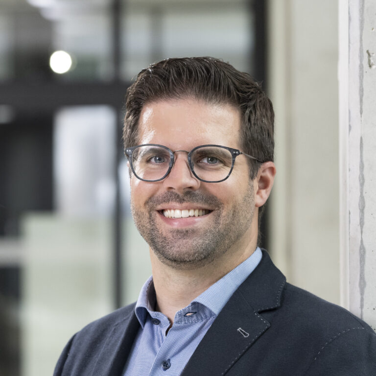
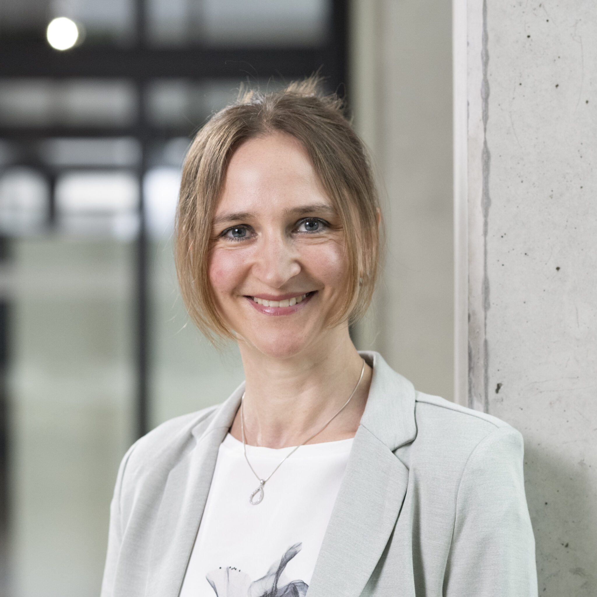
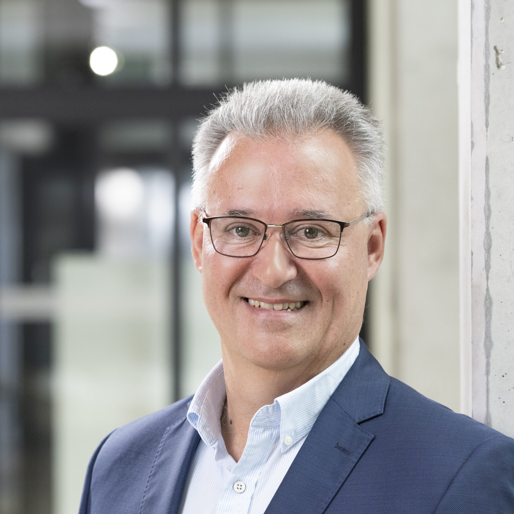

Christoph Grün
Founder & CEO
SensoSphere technology, partnerships and strategy.
CaviSphere® microcavity inserts and films.
A defined environment for your cells. A clearer starting point for your research.
A multicellular spheroid · illustrated structure
Grow spheroids in defined microcavities. Study how cells interact. Add local oxygen measurements when your experiment needs them.
Explore CaviSphere
Tell us what you want to study.
We’ll help you find your starting point.
One microcavity platform, from culture to readout.
See what fits your setup ↗Introduce your cells into defined microcavities.
Develop your model in inserts or integration films.
Image and run assays. With SensoSphere and suitable optics, measure local oxygen too.
Developed from microcavity research at Karlsruhe Institute of Technology. Made for the questions you ask in the lab.
Discover the research ↗
Founded in 2024 as a KIT spin-off. Bringing 3D cell culture, sensor technology and application support together.

Founder & CEO
SensoSphere technology, partnerships and strategy.

Founder & Customer Experience Manager
3D cell culture, application support and customer onboarding.

Founder & Scientific Advisor
More than 25 years of experience in 3D cell culture and microthermoforming.
Tell us about your cells, your setup and the question you want to answer.
Request trial inserts